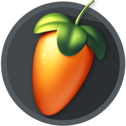

How PatchLink works
Translate third-party VST3 chains across DAWs without rebuilding racks by hand.
Import & Share Racks
Drop a saved mixer chain or rack file from your DAW or Explorer straight into PatchLink:
Zero-Load mode lets you share a code or convert formats without instantiating plugins first.
Two-Step Drag into Your Mix
Browsers can't drop native files straight onto DAW tracks — PatchLink bridges the drop in two quick moves:
PatchLink auto-detects REAPER, Ableton Live, FL Studio, Cubase, Studio One, and Bitwig (or asks in Standalone).
Supported DAW formats
Every VST3 plugin state blob is preserved across conversions.

FL Studio Mixer .fstTechnical FAQ
Why drag Website → PatchLink → DAW instead of straight into my DAW?
Web browsers cannot drop native binary files directly onto desktop DAW mixer tracks. PatchLink accepts drops from your browser (preset cards or 6-character codes) and writes the native DAW chain file on disk when you drag from PatchLink's toolbar into your DAW.
Which DAW stock plugins don't transfer across DAWs?
Host-exclusive stock effects (Ableton EQ Eight, REAPER JSFX, FL WaveShaper, etc.) only exist inside their own DAW. PatchLink transfers all third-party VST3 plugins with exact binary states and bypass flags, and skips host-only slots cleanly.
What if I don't own one of the plugins in a shared chain?
Installed plugins load with their saved preset state; missing plugins are listed clearly without crashing your DAW. In Zero-Load mode, you can even convert or re-share a chain without owning any of its plugins.
My plugin list inside PatchLink is empty after installing
Open Library in PatchLink's top bar and click Scan selected. Standard VST3 folders and DAW caches are detected automatically.